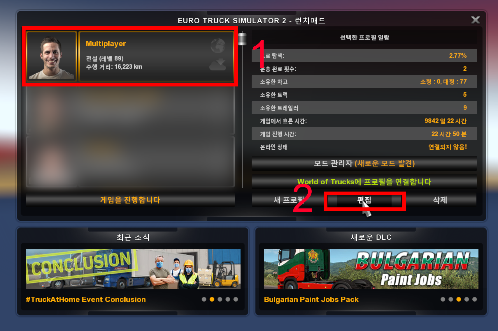
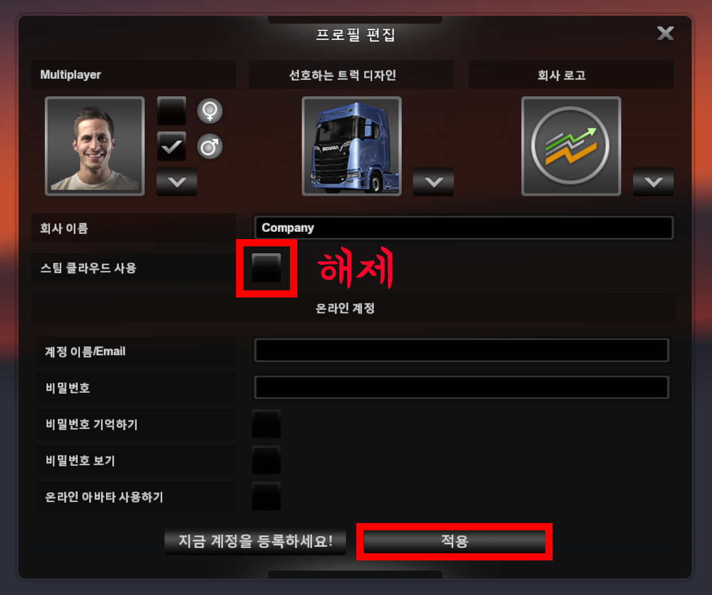
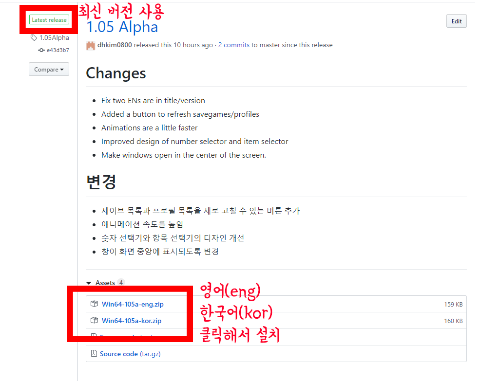
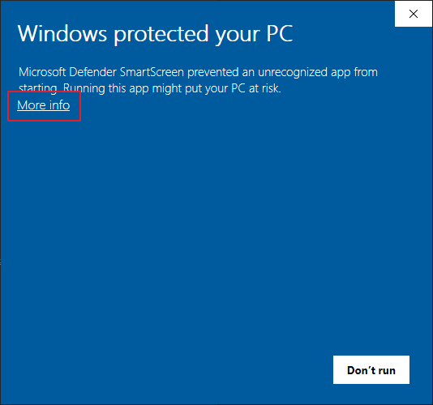
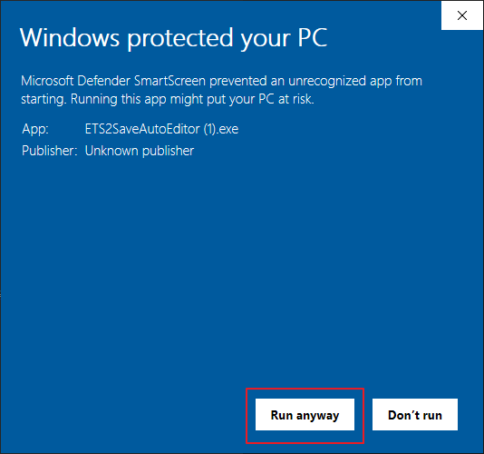
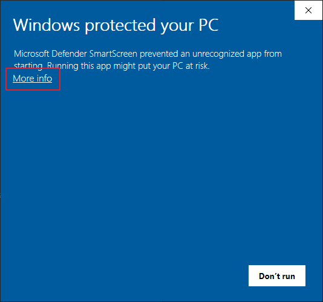
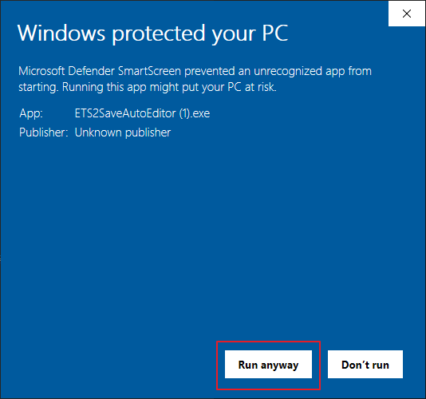
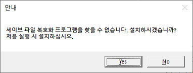
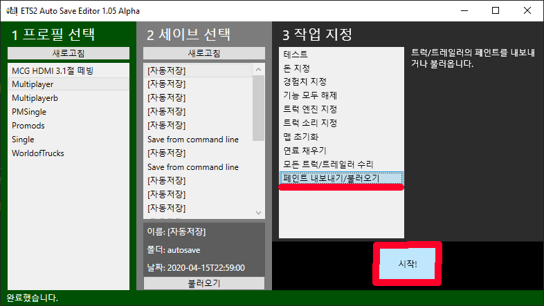
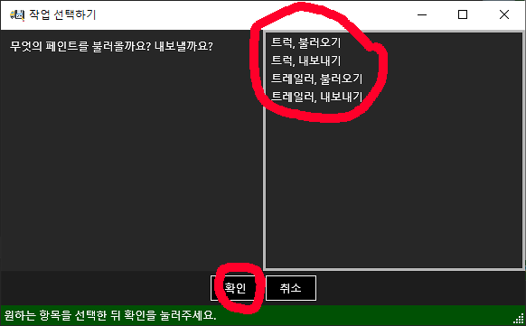

사용 방법 - ETS2 Auto Save Editor
ETS2 자동 세이브 편집기(ETS2ASE)를 이용하면 ETS2 세이브파일을 쉽게 편집하고, 페인트잡을 공유하거나 받아서 적용할 수 있습니다. 이 프로그램은 GUI로 만들어져 누구나 쉽게 사용할 수 있지만, 사용 시 꼭 알아야 할 몇 가지가 있어 이 안내를 작성합니다.
시작하기
스팀 클라우드 저장 비활성화
프로그램을 사용하기에 앞서, 한 가지 설정을 변경해야 합니다. 첫 번째로 해야 할 일은 당신이 수정하고자 하는 프로필의 스팀 클라우드 저장을 비활성화하는 일입니다. 스팀 클라우드 저장이 활성화되어 있으면 세이브 파일이 스팀에 저장되어, PC 내에서 편집할 수 없게 됩니다. 스팀 클라우드 저장을 비활성화하는 방법은 다음과 같습니다.
1. 프로필 편집 화면으로 이동
2. 스팀 클라우드 저장 비활성화
이렇게 간단한 절차만 마치면 스팀 클라우드 저장이 비활성화됩니다. 각 프로필별로 스팀 클라우드를 비활성화해야 한다는 사실을 잊지 마세요. 만약 세이브 편집 등을 자주 하고, 다른 프로필에도 모두 할 생각이 있다면, 처음 프로필을 만들 때부터 스팀 클라우드 저장을 비활성화하는 습관을 들여놓는 것이 좋습니다. 자, 이제 프로그램을 설치해봅시다. 이 프로그램은 exe 파일 한 개만 다운받아서 실행하면 되는 방식으로, 어려운 설치 절차는 없습니다. 당신이 기억해야 할 것은 Github에서 항상 최신 버전을 찾아서 이용해야 하는 것입니다. 이전 버전에서는 심각한 문제도 발견됐으니 반드시 최신 버전을 받아서 이용해야 합니다.
ETS2ASE 다운로드 및 실행하기
설치하는 방법은 간단합니다. 먼저 표시된 다운로드 버튼을 눌러서 프로그램 버전 목록을 확인하세요. 가장 위에 표시되는 최신 버전을 설치하시기 바랍니다. 프로그램은 한글판과 영문판으로 제공됩니다. 아래 사진을 참고하여 zip파일을 받으시기 바랍니다.
다운받은 zip파일을 실행하면 한 개의 exe가 들어있을 것입니다. 이 프로그램을 아무 위치에나 압축을 푼 뒤 실행하시면 됩니다. 프로그램이 작동을 위해 같은 폴더에 세이브 파일 복호화 프로그램을 추출하는 것을 잊지 마세요. 만약 프로그램 실행 시 아래 사진과 같은 경고가 표시된다면 다음과 같이 해결할 수 있습니다.
 



창 가운데의 '상세 정보'와 비슷한 문구를 누른 뒤, 실행 버튼이 표시되면 실행하시면 됩니다. 이 프로그램은 악성코드가 아니지만, 돈이 드는 전자 서명 인증서를 소유하지 않아서 표시되는 보안 경고입니다.
프로그램을 처음 실행하면 복호화 프로그램을 설치할 것인지 질문합니다. 이 경우 예를 눌러주시면 자동으로 해당 폴더에 복호화 프로그램을 추출합니다.
프로그램 창이 표시될 것입니다. 축하합니다! ETS2ASE를 완벽하게 성공적으로 설치하셨습니다! 이제 이 프로그램을 이용하여 할 수 있는 몇 가지 작업에 대해 알아봅시다.
주요 기능 둘러보기
프로그램의 사용 방법은 간단합니다: 실행. 프로필 선택. 세이브 선택. 작업 선택. GO!
몇 가지 주요 기능 사용법을 알아봅시다. 사용 방법이 너무 쉬운 기능들은 다루지 않습니다.
페인트 내보내기/불러오기
이 프로그램은 현재 할당된 트럭/트레일러의 페인트를 추출하거나, 추출한 페인트를 불러와 적용하는 기능이 있습니다. 할당된 트럭/트레일러를 기준으로 작동하니, 먼저 ETS2를 실행하여 원하는 트럭과 트레일러를 자기 자신에게 배치하세요. 이후 프로그램을 다시 실행하여 아래와 같이 작업을 선택하세요.

내보내기/불러오기를 선택한 뒤 저장하거나 불러올 파일 위치를 선택하면 자동으로 작업이 진행됩니다. 이후 게임을 실행하시면 적용된 모습을 확인하실 수 있습니다.
Copyright ⓒA 2020. All rights reserved.